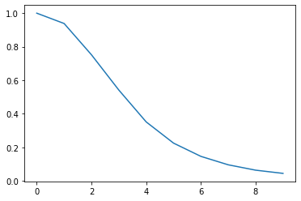

Non-linear dimension reduction to diffusion maps¶
Here we reduce the dimensions of a trajectory into a diffusion map.
Last updated: February 2020
Minimum version of MDAnalysis: 0.17.0
Packages required:
[1]:
import MDAnalysis as mda
from MDAnalysis.tests.datafiles import PSF, DCD
from MDAnalysis.analysis import diffusionmap
import numpy as np
import matplotlib.pyplot as plt
%matplotlib inline
Loading files¶
The test files we will be working with here feature adenylate kinase (AdK), a phosophotransferase enzyme. ([BDPW09]) The trajectory DCD samples a transition from a closed to an open conformation.
[2]:
u = mda.Universe(PSF, DCD)
[4]:
dmap = diffusionmap.DiffusionMap(u, select='backbone', epsilon=2)
dmap.run()
[4]:
<MDAnalysis.analysis.diffusionmap.DiffusionMap at 0x120b43c50>
[6]:
fig, ax = plt.subplots()
ax.plot(dmap.eigenvalues[:10])
[6]:
[<matplotlib.lines.Line2D at 0x120b42410>]

[8]:
fit = dmap.transform(3, time=1)
[9]:
fit
[9]:
array([[-9.47948061e-02, -7.59495111e-02, -5.47077199e-02],
[-1.66067940e-01, -1.32017243e-01, -9.44092770e-02],
[-1.99960405e-01, -1.54474739e-01, -1.07424677e-01],
[ 2.28814609e-01, 1.68694363e-01, 1.11460122e-01],
[ 2.50383632e-01, 1.71873083e-01, 1.03406697e-01],
[-2.50199664e-01, -1.56912015e-01, -8.12446062e-02],
[ 2.44546758e-01, 1.36780876e-01, 5.49902250e-02],
[ 2.46111139e-01, 1.16860780e-01, 2.68157499e-02],
[-2.12683519e-01, -7.53727228e-02, 7.31232455e-03],
[ 1.47584845e-01, 2.33288497e-02, -3.50970127e-02],
[ 1.18955077e-01, -2.65221496e-02, -7.43193445e-02],
[ 1.41126237e-01, -9.71074476e-02, -1.56091700e-01],
[-6.89273524e-02, 1.05297877e-01, 1.34996812e-01],
[-1.43198826e-05, -1.73408006e-01, -1.55402531e-01],
[ 3.59762508e-02, 1.66972269e-01, 1.08416113e-01],
[ 8.47486607e-02, 2.50379589e-01, 1.19461783e-01],
[ 3.13380103e-02, 6.66117529e-02, 1.88484093e-02],
[-7.38321094e-02, -1.39450412e-01, -2.55694742e-02],
[-1.03194968e-01, -1.63724641e-01, 6.29499299e-03],
[-1.16315888e-01, -1.70583023e-01, 2.35271461e-02],
[-1.07439129e-01, -1.45842601e-01, 3.27656236e-02],
[ 2.55954863e-01, 3.14832059e-01, -1.00934081e-01],
[-1.47043061e-01, -1.43761282e-01, 7.32981735e-02],
[-2.72167337e-01, -1.03771510e-01, 1.44889767e-01],
[ 8.11248843e-02, 4.71907842e-02, -4.42338562e-02],
[ 1.14970812e-01, 4.48913132e-02, -6.02716372e-02],
[-5.46730552e-01, 1.44368246e-01, 2.32597575e-01],
[ 9.74706358e-03, -1.61391559e-02, -2.15702305e-03],
[-1.31399475e-04, 1.93256734e-03, -1.58761185e-04],
[ 1.89791970e-01, -1.76783408e-01, -2.50958800e-03],
[-4.43689174e-01, 4.16017769e-01, -2.09604206e-01],
[-2.37163912e-02, 1.93014900e-02, -8.79229070e-03],
[ 3.82313379e-02, -3.97909864e-02, 2.21470779e-02],
[-7.72017080e-04, -1.68932767e-05, 6.25253580e-04],
[ 1.61290126e-01, -1.21535769e-01, 2.21942438e-01],
[ 8.01044835e-04, 2.02126974e-03, 9.33094517e-04],
[ 1.17906380e-02, -2.39567459e-02, 1.69532806e-02],
[-3.30954818e-02, 4.95644453e-02, -3.75452060e-02],
[ 1.16565287e-01, -7.76668246e-02, 8.65616354e-02],
[ 1.08387615e-03, 1.76083699e-03, -1.60421941e-03],
[ 6.70152765e-03, -9.03205822e-04, -8.75407908e-03],
[-2.79929791e-02, 6.98110542e-03, 3.14133442e-02],
[ 9.13526407e-03, -3.37966741e-03, -7.04527830e-03],
[-9.72552263e-07, -4.13718852e-07, 2.49853587e-07],
[ 2.70923579e-02, -1.21270364e-02, -2.19419110e-02],
[ 2.39217762e-02, -1.25613140e-02, -8.03452194e-03],
[-2.30381829e-02, 1.10092141e-02, 1.28731135e-02],
[-4.99698304e-03, 2.02193956e-03, -8.54140367e-06],
[-1.71850866e-03, 4.99354002e-05, 2.82857167e-03],
[-6.50397241e-03, 2.55586474e-02, -3.75881983e-02],
[-2.14493707e-03, 4.33260261e-03, -4.37065841e-03],
[ 2.19407118e-07, 1.91394699e-07, 7.56127335e-07],
[-1.14788701e-06, -2.48754737e-06, 4.60355403e-06],
[-5.49278578e-03, 8.39950776e-03, -4.80694122e-03],
[ 8.03466875e-03, -1.19651203e-02, 2.66252362e-03],
[ 3.09380952e-06, -5.80713373e-07, -7.77521967e-07],
[-2.77290966e-03, 3.95002406e-04, 1.58232807e-03],
[ 2.58493046e-02, -1.55236627e-02, 1.53359468e-03],
[-3.49752750e-06, -6.44252798e-07, -6.22808742e-06],
[-8.78061648e-06, 4.95952820e-06, 4.08775010e-06],
[-2.10067190e-03, 1.02726860e-03, -7.01308057e-04],
[-7.99850042e-03, 5.85194889e-03, -3.01477932e-04],
[ 5.65573297e-06, -2.21400873e-06, -6.86679586e-06],
[ 7.08874479e-06, -1.66896333e-05, 6.02414153e-06],
[ 3.98301754e-03, -4.61878116e-03, 1.59599234e-03],
[-2.41115509e-02, 2.86552782e-02, -9.51109260e-03],
[-3.19459626e-05, 1.51399642e-05, 3.38008133e-05],
[ 2.71833869e-06, 9.46021321e-07, -3.79718669e-06],
[ 1.10623369e-05, -1.75377513e-07, -2.36729959e-05],
[ 4.12681589e-03, -3.84581601e-03, 8.97311809e-04],
[-1.20313636e-02, 1.31762663e-02, -3.80631582e-03],
[-4.79412738e-05, 4.09524741e-05, 1.25997796e-05],
[-4.40194973e-03, 2.52114326e-03, 8.39702721e-04],
[ 6.62970321e-03, 3.42223276e-03, -8.02623547e-03],
[ 6.22809965e-04, 1.21933389e-03, -1.62077070e-03],
[ 3.95959824e-05, -3.40192962e-05, 8.55580766e-06],
[-3.20808587e-04, -7.71223894e-03, 7.73400897e-03],
[ 3.60022861e-03, -6.97379275e-03, 4.78001377e-03],
[-5.25353641e-03, 8.77381796e-03, -4.85587287e-04],
[-4.71610600e-05, 5.25300689e-05, 2.61333613e-05],
[ 2.62492457e-04, -2.51552186e-04, -1.49977065e-04],
[ 9.87888449e-04, -1.77224624e-03, -4.33544331e-04],
[ 1.36401664e-04, -1.42315576e-04, -1.26919610e-04],
[-2.20947565e-03, 4.69544036e-03, -1.98163950e-03],
[ 1.05068341e-05, -5.56791274e-05, 1.81966652e-04],
[-1.53132312e-05, -3.47968344e-05, -1.25551781e-04],
[-2.04423085e-04, 1.41378514e-04, 7.99721775e-04],
[-7.45630582e-04, 7.46050192e-04, -1.64624588e-03],
[ 9.13827319e-04, -1.02946871e-03, 5.75442281e-04],
[ 1.01115638e-03, -1.15363557e-03, -2.42301224e-04],
[-9.28550536e-05, -1.92127567e-04, 9.40980602e-05],
[-6.25782744e-05, 4.64226348e-05, 1.97465650e-04],
[ 9.34697307e-04, -2.69385337e-03, 1.14502838e-03],
[-2.00214394e-04, -3.20397461e-03, 3.49433959e-04],
[-2.54495318e-04, 4.52068424e-04, -2.34791504e-04],
[-6.24183142e-03, 1.63358361e-02, -7.39439916e-03],
[-7.01684675e-04, -1.46898631e-03, -4.03102911e-04],
[-4.15202159e-04, 3.81447425e-03, -1.08760435e-03]])
[10]:
print "yes"
File "<ipython-input-10-dbc51e0c5b49>", line 1
print "yes"
^
SyntaxError: Missing parentheses in call to 'print'. Did you mean print("yes")?
[ ]: